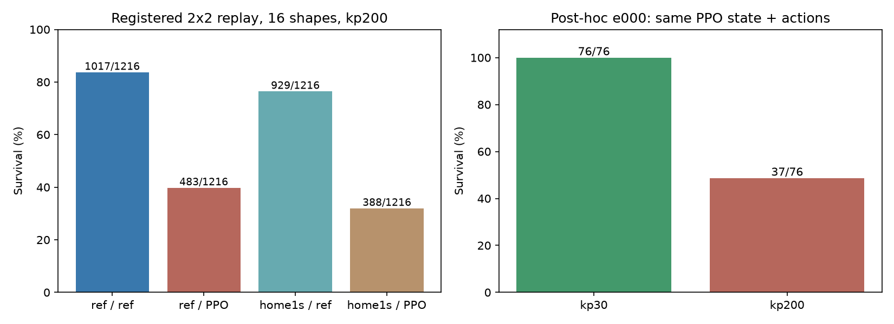

[판정] 형상 예측 학습의 우열은 판정 불가. 네 조건·16형상 모두에서 1초간 생존한 공통 행동 구간이 0개였음. 사전 최소24그룹·8모션을 충족하지 못해 회귀 학습은 실행하지 않았음. 주 기준을 바꾸거나 낙상 표본을 임의로 바꿔 성공 판정을 만들지 않았음.
[사실] 실제 MJX GPU에서 16형상 × 19모션 × 4구간 × 4조건 = 4,864회 수집했음. 길이1초, kp200, dt0.02s. e000에서 고른 같은 행동 열을 모든 형상과 두 출발 상태에서 그대로 재생했음. 레퍼런스 출발 상태는 형상별 리타겟 상태이며, home 출발은 실제 home 목표각으로 1초 시뮬레이션한 상태임. 같은 형상·구간의 두 행동 조건은 정확히 같은 초기 qpos/qvel을 사용했음.
| 조건 | 1초 생존 | 생존율 |
|---|---|---|
| 레퍼런스 출발 / 레퍼런스 행동 | 1017/1216 | 83.6% |
| 레퍼런스 출발 / PPO 행동 | 483/1216 | 39.7% |
| home 1초 출발 / 레퍼런스 행동 | 929/1216 | 76.4% |
| home 1초 출발 / PPO 행동 | 388/1216 | 31.9% |
[사실] 레퍼런스 행동 조건도 모든 형상에서 살아남은 그룹은 3개뿐이었고, 다른 조건은 0개였음. 조건별 전체 생존율과 공통 생존 표본은 다른 지표임. 표본별 실제 궤적은 전부 보관했음.
[사실] 주 실험을 본 뒤 e000에서만 추가 점검했음. 기존 PPO 행동은 kp30에서 수집된 목표각임. 실제 원본 시작 상태·같은 행동·kp30으로 재생하면 76/76 생존했고, 원본과 전 구간 관절각 RMSE는 0.00001842rad, 마지막 XY 오차 중앙값은 0.00001060m였음. 재생 코드가 원본 궤적을 복원함을 확인했음.
[사실] 같은 원본 상태·행동에서 kp만200으로 바꾸면 생존은37/76으로 줄었음. e000의 레퍼런스 출발·home 출발도 kp30에서는 각각76/76 생존했음. [판단] 이번 kp200에서의 많은 PPO 행동 낙상을 PPO 데이터의 형상 학습 한계로 해석할 수 없음. kp가 다른 곳에서 만들어진 목표각을 이식한 영향이 확인됐음. 다른15형상의 kp30 결과는 미검증임.

[한계] 이 실험으로 초기 상태와 행동 출처 중 무엇이 안 본 형상 예측을 개선하는지 결론내릴 수 없음. home1초는 완전 정지·안착을 보장하지 않음. e000 행동만 사용했으며, 원본 재생 점검도 한 형상만 수행했음. 회귀 학습·TT 재학습·10초 task 평가는 실행하지 않았음. 주 실험과 사후 분석은 분리했음.
[사실] 입력 해시, 전체 궤적의 유한성·크기, 형상 간 동일 행동, 행동 조건 간 동일 실제 초기 상태, valid/fell 일치 검증을 통과했음. 관련 코드 검증17개 통과. 결과·캐시·임시 파일은 /home에 저장했음.
사전 조건·성공 기준 / 주 평가 결과 / 요약·자원·검증 / 사후 검증 조건 / 사후 검증 결과 / 형상별 낙상 / 궤적 파일 해시 / 재현 방법